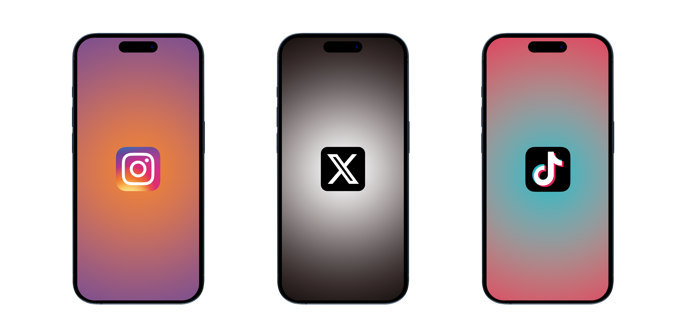
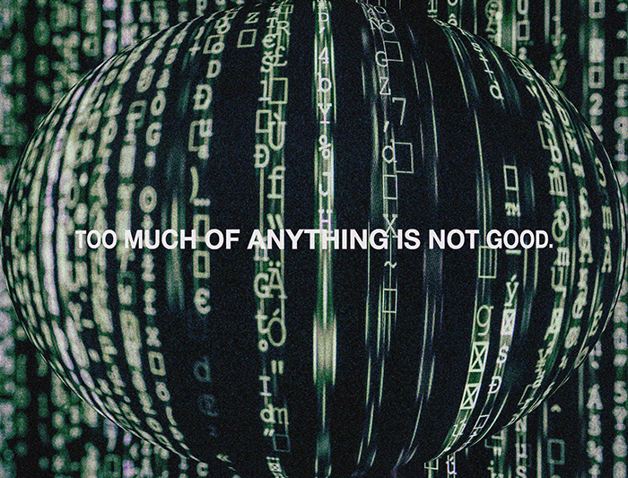

INTRODUCTION:
(Clips Used: https://www.youtube.com/watch?v=2SvqoaZzyVs&t=34s & https://www.youtube.com/watch?v=gnEpRDh4Y2A&t=32s)
Although social media was initially intended to enhance connectivity, its pervasive presence has contributed to a significant decline in mental health among the current generation, turning a tool for interaction into a source of psychological harm.
(Graphic by: Andrei V.)
Instagram, X (formely known as Twitter), and Tiktok are the most used social media outlets in today's age. Active users on Instagram: 1.4B, X: 300M, and Tiktok: 1.0B
71% of people who use social media agree that it is important to take a break from it.
45% of social media users feel overwhelmed by the amount of information shared on social media.
24% of teenagers say social media has a mostly negative effect on their life.
70% of teenagers check social media several times a day.
59% of adults who use social media report that it has impacted their mental health.
41% of women on social media report feeling pressure to present themselves in a certain way.
63% of people on social media report being lonely.
37% of people on social media report feeling FOMO (fear of missing out).
63% of parents believe social media is harmful to their children's mental health.
32% of teenagers report being cyberbullied.
40% of people on social media report feeling anxious or depressed after using it.
60% of people on social media report feeling like they need to take a break from it.
70% of teenagers believe that social media platforms do not do enough to prevent cyberbullying.
42% of people on social media report feeling more insecure about their appearance after using it.
37% of people on social media report being negatively impacted by political discussions on social media.
62% of people who experience mental health problems have been negatively impacted by social media usage.
Social media addiction is linked to higher rates of anxiety, depression, and poor sleep quality.
A study found that individuals who spent more than two hours a day on social media were more likely to report poor mental health.
Social media usage has been linked to increased feelings of loneliness and decreased life satisfaction.
In a survey, 45% of young adults reported feeling more anxious after using social media.
Cyberbullying can lead to symptoms of depression and anxiety.
Social media platforms have been criticized for not doing enough to prevent cyberbullying.
Source: https://www.brightfuturesny.com/post/social-media-and-mental-health-statistics#:~:text=45%25%20of%20social%20media%20users,has%20impacted%20their%20mental%20health.

(Graphic By: Andrei V.)
Practice taking breaks from social media to prioritize your mental health.
Ways to practice:
Turn on "Do not disturb" mode.
Turn off all app notifications.
Set a timer for how long you can be on social media.
Find hobbies that you like that'll give you time away from your phone.
May is Mental Health Awareness Month. If you or a loved one suffers from Mental Health, Please don't be afraid to seek professional help. Remember:
It's okay to not be okay. Life is so much bigger than social media. Don't get caught up in your screen & end up missing out on the chance of creating a beautiful life for yourself.
Copyright © 2024 Andrei Villavicencio - All Rights Reserved